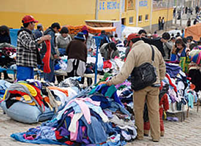
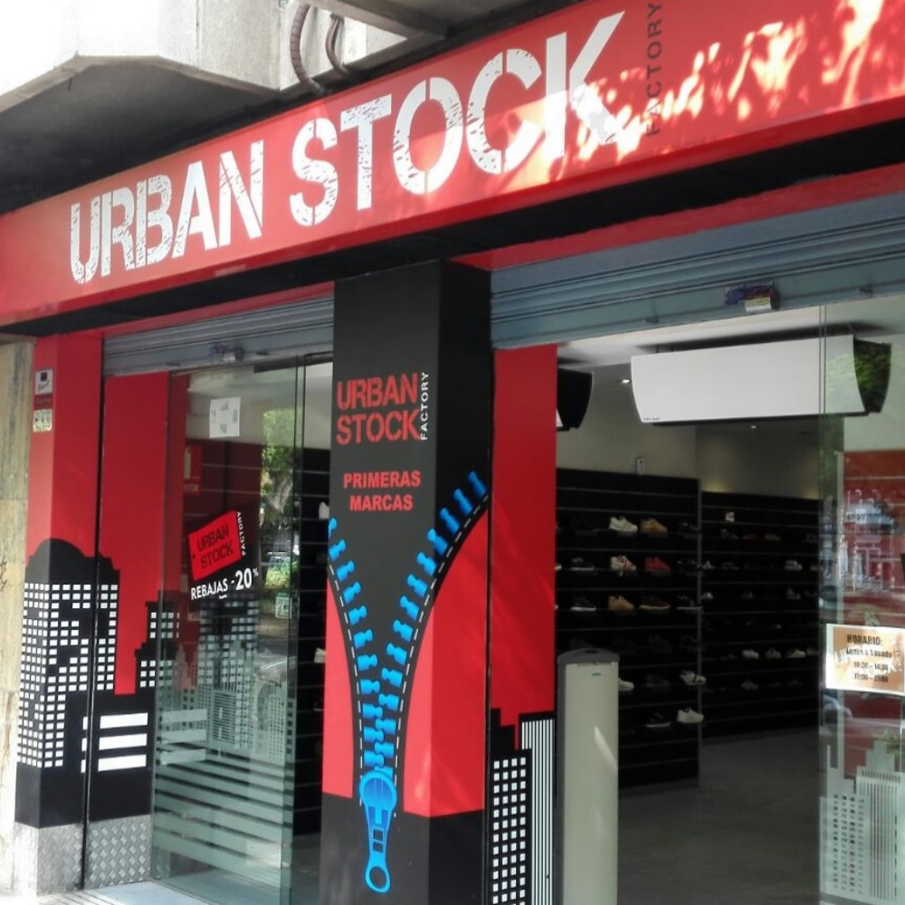

La tienda "Urban Stock Outlef" nació un 13 de enero del 2018, la cual fue fundada por
la joven Kerstin Paola Avalos, siendo una mujer emprendedora que inicio a muy temprana edad a incursionar en el mundo de las ventas.
Al principio vendia ropa en la calle, esto por que no contaba con el dinero suficiente para tener un local, pero a medida que las ganancias fueron
incrementando pude rentar un local y asi tener mucha mas mercancia, siendo tambien un lugar mas atractivo y comodo para que las personas se interesaran
por comprar ropa.

Quisé abrir una tienda con ropa del género urbano por que este estilo está cada vez más integrado en las colecciones, de tal modo que en la actualidad las marcas
de lujo disponen de decenas de zapatillas deportivas cuando años atrás solo vendían zapatos de tacón.
estilo urbano se basa en el uso de cazadoras tipo bomber, vaqueros rotos y camisetas con estampados divertidos dentro de una combinación lógica. Complementos como
las bufandas y chalecos también hacen gala en este estilo. No todos los que apuestan por este look se ven iguales, la idea no es uniformarse, así que puedes lucir único/a mostrando
algo de tu personalidad al vestir.

Si eres de los que apuestan por esta forma de vestir, debes tener claro que los blazer, trajes y ropa de vestir no encajan en este look. Aunque ser fiel a un estilo de moda no
significa romper el código de vestimenta, debes adaptarte a cada ocasión.